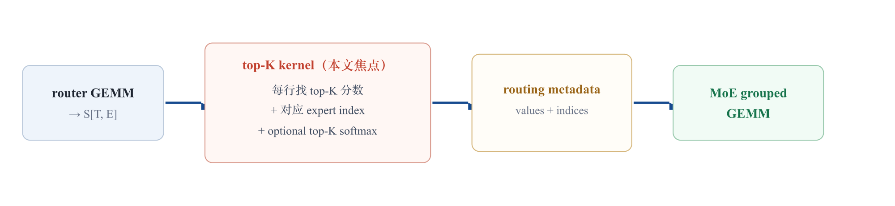
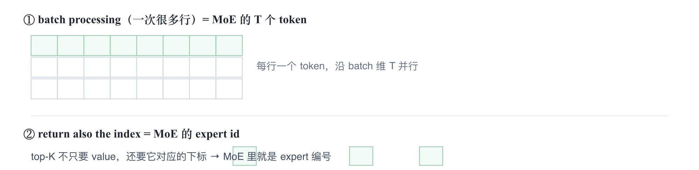
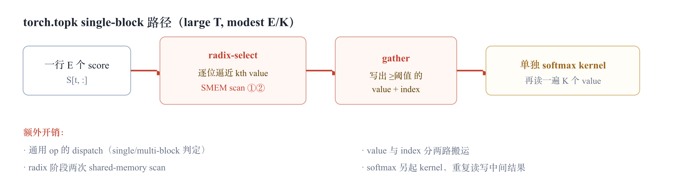
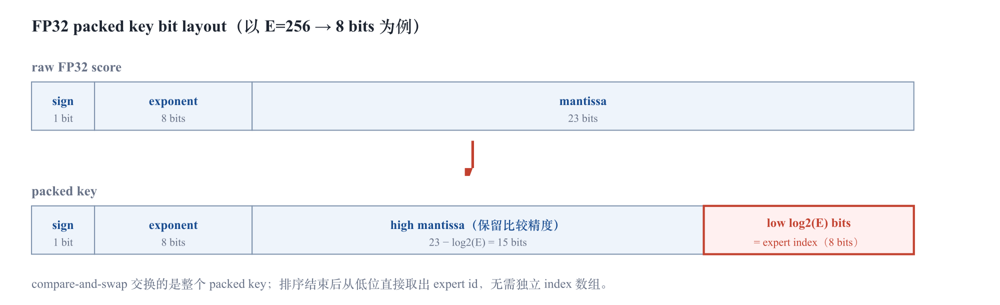
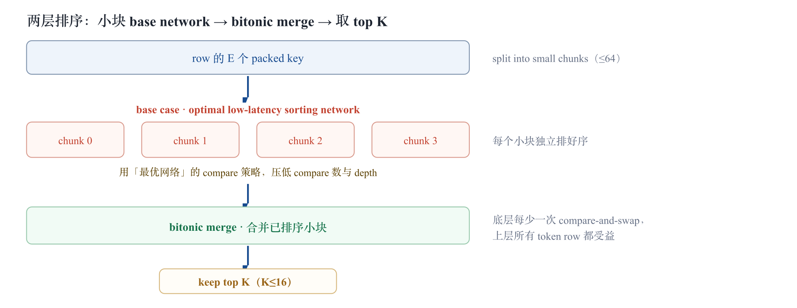
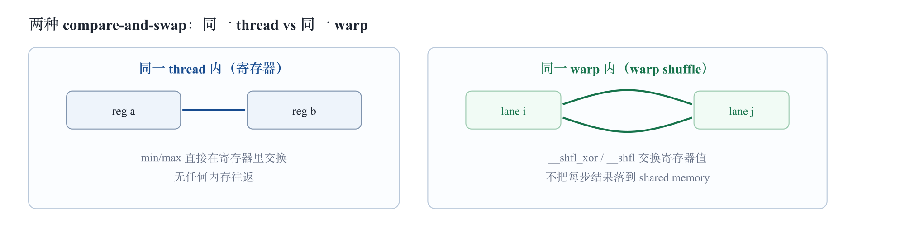
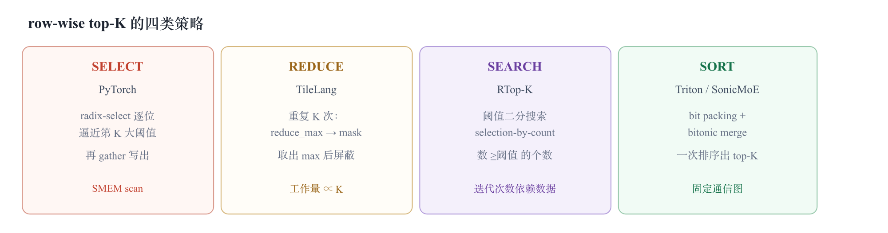

AI Infra Deep Dive · Blackwell × MoE Kernel
MoE 的核心耗时通常在两段 grouped GEMM 上，所以一上来很难相信「选 top-K expert」这种看似简单的操作值得单独写 kernel。SonicMoE 的观察是：在 fine-grained MoE 里，expert 数 E 被推得很大、每个 token 激活的 K 仍然很小、token 数 T 极大，这正好构成一个固定形状的 row-wise small-K selection。当大家都把这一步交给通用 torch.topk 时，它能占到 router 计算时间的约 40%。
router GEMM 产出每个 token 对每个 expert 的打分 S[T, E]。接下来要做的事固定且重复：对每一行找出最大的 K 个分数、记下它们对应的 expert id、（可选）对这 K 个分数做 softmax，最后把 routing metadata 交给 MoE 计算。SonicMoE 优化的就是中间这条 top-K 路径，而不是 MoE GEMM 主体。

论文反复引用 ScatterMoE、MoMoE、MegaBlocks 这些已有 MoE 实现，目的不是讲它们的 top-K 算法，而是说明一个事实：这些系统的 router 里都直接调用了通用 torch.topk。换句话说，top-K 是 MoE router 的「默认实现」，而这个默认实现没有利用 MoE 特有的形状。
形状维度 | fine-grained MoE 的典型取值 | 对 top-K 意味着什么
T（token 数 / 行数） | 非常大（batch × seqlen） | 并行维度，决定吞吐的主要规模
E（expert 数 / 列数） | 变大，可达数百到数千 | 每行要扫的元素数，是排序网络的输入规模
K（激活 expert 数） | 很小，常见 4 / 8 / 16 | 只取前 K，不需要完整排序
和很多 kernel 优化一样，这次改动不在用户接口层，而在最底部的实现层：上层 router 仍然「调用 top-K」，但底层把通用 selection 换成了面向这一形状专门化的排序网络。
图 A · 上层代码继续「调用 top-K」，差别藏在底层通信图里——这是高性能库变锋利的典型方式。
下面四个 Stage 直接回答五个问题：
一句话结论：SonicMoE 没有「发明 bitonic top-K」。它的贡献是把 top-K 从「通用 selection + gather」改写成「固定通信图上的 register/warp 排序」，并在 MoE 目标形状（E≤4096、K≤16、large T、Hopper）上对 base case 做进一步专门化。
在钻进 SonicMoE 之前，先把它放进 GPU top-K 的大背景里。NVIDIA GTC 的 《Accelerating Top-K Computation on GPU》(CNS20315, Zhang & Wang) 把 GPU top-K 归纳得很干净：三大算法族 + 两个工程增强 + 一套内存/同步权衡。这套坐标系正好能解释「为什么 PyTorch 走 radix select、FAISS 走 WarpSelect、而 SonicMoE/Triton 走 sort」，以及「为什么 SonicMoE 在 E≤4096 就停在 warp 级」。
把一行 N 个数里选出 top-K，GPU 上主要有三条路：
算法族 | 代表实现 | 思路 | 优点 | 缺点 | 本文对应
Sorting | cub::DeviceRadixSort | 整行排序，取前 K | GPU 排序极快、实现成熟 | 做了多余的功（排了不需要的部分） | Triton / SonicMoE（但只排到 top-K，见 Stage 2–3）
Priority Queue | FAISS WarpSelect / BlockSelect | 维护一个 size-k 的 PQ，元素逐个尝试插入 | 只读一遍数据、可流式、小 k 高效 | 复杂度 ∝ log k，大 k 变慢 | Stage 3 的「search / PQ」近邻
Selection + Filter | radix select / quickselect / sampleselect | 先用 O(N) 选出第 K 大（kth value），再 filter | k、N 都大时高效 | 可能要多次读输入 | PyTorch torch.topk = radix select（Stage 1）
定位 SonicMoE：它属于 Sorting 族，但因为 K≤16，只把 top-K 这一段排出来、不做整行全排序，从而避开 sort 族「做多余功」的缺点；同时用 register/warp 把 sort 族最擅长的固定网络推到最低延迟。换句话说，SonicMoE = sort 族的优点（规整、可并行）− sort 族的缺点（全排序），再叠上 MoE 形状特化。
GTC 特别点出实际工程里 top-K 几乎总要加两件事，而这两件正好就是 MoE router 的需求：

GTC 给出一个处理「一个 instance」时的并行粒度权衡表。粒度越大，能容纳的元素越多，但中间数据要落到更慢的内存、同步成本也更高：
粒度 | #thread | 中间存储 | 同步成本
warp | 32 | register（最低延迟） | 低（warp 内隐式）
block | [32, 1024] | shared memory（低延迟） | 中（__syncthreads()）
multi-block | 可以很大 | global memory（高延迟） | 高（甚至额外 kernel launch）
策略是：给一个 warp/block 能处理的元素数设上限，只有这一份的 N 超过上限才动用更大粒度；当 batch 很大时，每个 instance 反而用更少线程，靠 batch 把 GPU 占满。
这正是 SonicMoE「E≤4096 只用 thread/warp-level primitive」的根因：fine-grained MoE 里每行 E 不算大、batch T 极大，刚好落在「每个 instance 用少量线程、留在寄存器」的甜区。所以 SonicMoE 把 compare-and-swap 压在 register + warp shuffle（最低延迟、最低同步），不必落 SMEM / global；论文也明说更大的 E 才需要 SMEM buffer 和 block 级同步——对应表里的 block / multi-block 行。
有意思的是，这三族在 GPU 上其实复用同一套原语——本文后面拆 SonicMoE 时会反复见到它们：
底层积木 | 在 GTC 里的角色 | 在本文里的落点
bitonic merge 合并两个有序 top-K | WarpSelect 的迭代归约「trick from bitonic merging」：反向配对取 max → bitonic → merge | QuACK bitonic_topk_merge（本文 2.6），一模一样的反向配对取 max
float → 可比较 uint（bit flip） | radix select 的 float_flip：mask = -int(f>>31) | 0x80000000; f ^ mask | PyTorch torch.topk 的 convert（本文 Stage 1 step 0），同一招
warp-aggregated atomics | radix histogram / filter 提速：match_any 求 peer_mask、__popc 计数、leader lane 单次 atomicAdd | radix select 的 histogram 与 filter 阶段（见 Stage 1 的 DEEP DIVE）
prefix-sum（warp/block scan） | 把直方图转前缀和，定位「第 K 个落在哪个桶」 | radix select「find the bin with kth element」
一句话背景：GPU top-K 的三大族（sort / PQ / selection）共享同一套底层原语——bitonic 网络、bit-flip 排序 key、warp shuffle / warp-aggregated atomics、prefix-sum。SonicMoE 的工作不是发明新原语，而是选定 sort 族 + register/warp 粒度，并在 MoE 的「batched、small-k、row-wise、E≤4096」形状上把它做到极致。
从这一节起，我们把「调用」和「实现」分成两层来讲，并且全程用同一个具体例子走流程——这样基础版和优化版的输入输出能逐字段对上。
贯穿全文的运行示例（E=8, K=2，单个 token 行）：
expert id : 0 1 2 3 4 5 6 7
router_logits[t] = [ 2.1, 0.5, 3.7, 1.2, 0.9, 4.5, 1.8, 0.3 ]
期望 top-2 → values = [ 4.5, 3.7 ]，indices = [ 5, 2 ]
softmax(top-2) = [ 0.690, 0.310 ] （4.5→0.690, 3.7→0.310）
实际形状里 T 很大、E 可达数百到数千，这里取 E=8 只是为了把每一步都画得出来。基础版和优化版语义相同，对同一行必须给出同一组 (values, indices)。
MoE baseline 里这条路径几乎都是同一个写法（ScatterMoE / MoMoE / MegaBlocks 都是如此；SonicMoE 在越界时的 fallback 也是它——见 2.1 的 else 分支）：
# router 打分 → 每行选 top-K → 对选中的 K 个做 softmax
router_logits = F.linear(x, router_w) # [T, E] = [T, 8]
vals, idx = router_logits.topk(K, dim=-1) # vals,idx: [T, K] = [T, 2]
probs = vals.softmax(dim=-1) # softmax(topk(x))
# probs / idx 交给 MoE grouped GEMM
把上面那一行 router_logits[t] 代进去，调用前后的张量是：
| 步骤 | 张量 | 本例的值 |
|---|---|---|
| 输入 | router_logits[t] · shape [8] |
[2.1, 0.5, 3.7, 1.2, 0.9, 4.5, 1.8, 0.3] |
.topk(2) |
vals[t] / idx[t] · [2] |
vals=[4.5, 3.7] · idx=[5, 2] |
.softmax |
probs[t] · [2] |
[0.690, 0.310] |
注意 topk 和 softmax 是两个独立 kernel：第一个写出 vals/idx 到显存，第二个再读回 vals 算 probs。这一点在 1.3 会变成开销来源。
PyTorch 的 CUDA top-K（TensorTopK.cu）采用 radix-select 后接 gather 的经典两阶段做法：先用按位 radix 的方式逐位逼近第 K 大的阈值（kth value），确定阈值后再 gather 一遍，把不小于阈值的元素和下标写出来。它按 T, E, K dispatch 到 single-block 或 multi-block 版本；在 SonicMoE 关心的 large T / modest E,K 下走 single-block version，selection 过程里有 两次 shared-memory scan（直方图计数 + gather 时的 compaction）。
radix-select 分两个阶段：阶段 A「逐位定阈值」先找出第 K 大的那个值（threshold），阶段 B「gather」再把 ≥ threshold 的元素紧凑写出。下面把例子 [2.1,0.5,3.7,1.2,0.9,4.5,1.8,0.3]、K=2 的每一步输入 / 操作 / 输出都列出来。
step 0 · 浮点 → 可比较 key（不落 SMEM，逐元素做）
float 的原始位模式对负数不单调，没法直接按位比大小。所以先把每个 score 转成一个无符号整数 key，使「key 的大小顺序 == float 的大小顺序」（正数：把符号位置 1；负数：全位取反）。本例全为正，转换后顺序不变，我们只需关心高位字节就能分桶：
位置 idx | 0 | 1 | 2 | 3 | 4 | 5 | 6 | 7
score | 2.1 | 0.5 | 3.7 | 1.2 | 0.9 | 4.5 | 1.8 | 0.3
float 位 (hex) | 40066666 | 3F000000 | 406CCCCD | 3F99999A | 3F666666 | 40900000 | 3FE66666 | 3E99999A
key 最高字节 | C0 | BF | C0 | BF | BF | C0 | BF | BE
输入：8 个 float。输出：8 个可按位比较的 uint32 key（表中只显示最高字节）。
加个负数看完整流程（step 0 的另一条分支）：上表全是正数，只用到「正数 → 把符号位置 1」。一旦出现负数，就走「负数 → 全位取反」。两条规则合起来才能保证 key 单调（float 越大，key 越大）。下面挑两正两负各跑一遍：
score | float 位 (hex) | 符号位 | 转换规则 | key (hex) | key 高字节
+4.5 | 40900000 | 0（正） | 置符号位 | 0x80000000 | C0900000 | C0
+0.5 | 3F000000 | 0（正） | 置符号位 | 0x80000000 | BF000000 | BF
−0.5 | BF000000 | 1（负） | 全位取反 ~x | 40FFFFFF | 40
−2.0 | C0000000 | 1（负） | 全位取反 ~x | 3FFFFFFF | 3F
按 float 排序：−2.0 < −0.5 < +0.5 < +4.5；按 key 排序：3FFFFFFF < 40FFFFFF < BF000000 < C0900000 —— 完全同序 ✓。两条不变量让 radix「从最大桶往下数」对正负混合也成立：① 所有正数 key 的最高位都是 1（≥ 0x80000000）、所有负数 key 最高位都是 0（< 0x80000000），所以正数恒排在负数前面；② 同号内，越大的数 key 越大（负数取反后，越接近 0 的 key 越大）。unpack 时对每个 key 再按符号做一次逆变换即可还原原始 float。
step A1 · 第 1 轮 radix（最高 8 位）：缩小候选集 — 这里用到 SMEM scan ①
项 | 内容
输入 | 8 个 key 的最高字节：[C0,BF,C0,BF,BF,C0,BF,BE]
操作 | 在 SMEM 里建 256 桶直方图并计数 → 0xC0:3（含 2.1/3.7/4.5）、0xBF:4、0xBE:1；再从最大桶往下累加，找「累计个数首次 ≥ K=2」的桶。0xC0 一个桶就有 3 ≥ 2 → 第 2 大一定落在 0xC0 桶内。
输出 | 固定前缀 0xC0??????；候选集缩成 {4.5, 3.7, 2.1}；比该桶更大的元素个数 above=0（K 不用减）。
step A2 · 第 2 轮 radix（次高 8 位）：锁定阈值
项 | 内容
输入 | 候选 {4.5,3.7,2.1} 的次高字节：4.5→0x90、3.7→0x6C、2.1→0x06
操作 | 同样建桶并从最大往下累加：0x90:1（累计 1 < 2）→ 再加 0x6C:1（累计 2 = K）。累计个数在 0x6C 桶达到 K。
输出 | 阈值 threshold = 3.7（桶 0x6C 内唯一元素）；严格大于阈值的元素 above=1（即 4.5）。后续位轮次因该桶只剩 3.7 一个候选，直接确认 threshold=3.7。
step B · gather：紧凑写出 top-K — 这里用到 SMEM scan ②
项 | 内容
输入 | 整行 8 个 key + threshold=3.7
操作 | 用前缀和（prefix-sum scan）算出每个命中元素的写入下标：先写 key > 3.7 的（命中 4.5@idx5），再用 key == 3.7 的补满到 K 个（命中 3.7@idx2）。sorted=True 时输出按降序排列。
输出 | values = [4.5, 3.7]，indices = [5, 2]
「两次 SMEM scan」到底指什么：scan ① = 每一轮 radix 在 shared memory 里做的直方图计数（把整行归约进 256 个桶）；scan ② = gather 阶段的前缀和 compaction（把命中元素紧凑写到连续位置）。这两次扫描就是 single-block 版本相对「固定排序网络」多出来的固定成本——也正是 SonicMoE 要绕开的东西。

DEEP DIVE · radix select 在 GPU 上到底怎么并行（NVIDIA GTC CNS20315）：上面的「按位定阈值」在 GPU 上展开成一个固定循环——select pivots → 算 histogram → 找含第 K 个的桶 → filter → 元素减少了就再来一轮。每一环都用一个 GPU 原语顶上去：
按数据规模还分 warp-wide / block-wide（SMEM，__syncthreads）/ device-wide（多次 launch 或 grid.sync() cooperative groups，ping-pong buffer 交换）三套实现——正好对应 B.3 的粒度权衡表。这就是 torch.topk 这条 selection 路径在 GPU 上的真实形态：它一点都不慢，只是作为通用、可跨规模的算子，无法像 SonicMoE 那样假设「E≤4096、K≤16、留在寄存器」。
torch.topk 是一个面向任意 shape 的通用 selection 算子。它必须正确处理 K 接近 E、E 极大、各种 dtype 等情形，因此实现上不能假设「K 一定很小」「E 一定 ≤ 4096」「每行刚好一个 warp 处理」。这些通用性带来的代价，在 MoE 这种固定窄形状下变成了纯粹的浪费：
baseline 的三类固定成本：
论文给出的动机数字是：在它关心的配置下，PyTorch top-K kernel 可以占 router 计算时间的约 40%。即使 top-K 不是 MoE 层总耗时最大项，把它从 40% 压下来也能明显减少 router overhead——这就是 Stage 2 要做的事。
SonicMoE 把这条路径整体搬进一个专门化的 CuTe/CUDA kernel。先看怎么调用（2.1），再看kernel 内部怎么实现（2.2），最后把四个关键机制逐一展开（2.3–2.6）。两小节都用 Stage 1 那个 E=8, K=2 的例子走一遍。
SonicMoE 对外有三层入口，从「整层 MoE」到「底层 custom op」，按需要选一层即可：
from sonicmoe.functional import (
moe_TC_softmax_topk_layer, # 入口 A：整层 MoE
TC_Softmax_Topk_Router_Function, # 入口 B：只要 router 的 top-K
)
from sonicmoe.functional.forward import _topk_softmax_fwd # 入口 C：底层 op
# ── 入口 A：整层 MoE（最常用，router→top-K→两段 grouped GEMM 一条龙）
o, router_logits, expert_freq = moe_TC_softmax_topk_layer(
x, router_w, w1, b1, w2, b2, K=2, stream_id=0,
is_softmax_over_topk=True, # softmax(topk(x))；Qwen3 用 False
norm_topk_probs=False,
)
# ── 入口 B：只要 router 的 top-K（autograd.Function，可反传）
topk_scores, topk_indices = TC_Softmax_Topk_Router_Function.apply(
router_logits, E, K, is_softmax_over_topk, norm_topk_probs
) # topk_scores [T,K] float32, topk_indices [T,K] int32
# ── 入口 C：底层 custom op，结果写进预分配好的张量
_topk_softmax_fwd(router_logits, topk_router_score, topk_router_indices,
E, K, is_softmax_over_topk=True, norm_topk_probs=False)
关键在 _topk_softmax_fwd 里的一道门槛判断：只有满足形状条件才走自定义 kernel，否则原样 fallback 回基础版（即 Stage 1 的 torch.topk）。这段是仓库 forward.py 的真实逻辑：
def _topk_softmax_fwd(router_logits, topk_router_score, topk_router_indices,
E, K, is_softmax_over_topk, norm_topk_probs):
if E <= 4096 and K <= 16 and E % 8 == 0:
_topk_fwd(...) # ← 自定义 CuTe kernel（见 2.2）
else:
# fallback == 基础版本（和 Stage 1 完全一样）
if is_softmax_over_topk:
r = router_logits.topk(K, dim=-1)
vals = r.values.softmax(dim=-1, dtype=torch.float32)
...
else:
probs = router_logits.softmax(dim=-1, dtype=torch.float32)
r = probs.topk(K, dim=-1)
...
| 本例（E=8, K=2） | 输出（与基础版逐字段相同）
输入 | router_logits[t]=[2.1,0.5,3.7,1.2,0.9,4.5,1.8,0.3] | —
门槛 | E=8≤4096 ✓ · K=2≤16 ✓ · 8%8==0 ✓ → 走自定义 kernel | —
输出 | topk_scores=[0.690,0.310] | topk_indices=[5,2]
调用层的契约：无论走自定义 kernel 还是 fallback，对同一行 router_logits 必须给出同一组 (scores, indices)。所以「优化」对调用方是透明的——你换不换 SonicMoE，上层 MoE 代码一行都不用改。
满足门槛后，_topk_fwd 会按 (input_dtype, output_dtype, N, k, mode, norm_topk_probs) 编译并缓存一个专用 kernel（cute.compile + compile_cache），然后启动。kernel 主体（topk.py 的 _TopK.kernel）可以抽象成七步：
# _TopK.kernel 主干（精简自 topk.py，mode = softmax(topk)）
tXrX = load_row_to_registers(mX) # ① 128-bit 向量化 load
tXrX_f32 = tXrX.to(Float32) # ② 转 FP32
if mode == TOPK_OVER_SOFTMAX: # ③ 可选：full-row softmax→log-prob
tXrX_f32 = full_row_softmax_logprob(...) # （本例是 softmax(topk)，跳过）
log_N, idx_mask = log2(npot(N)), (1<<log_N)-1 # ④ 把 expert id 编进低 log_N bits
for i in range(len(tXrX_f32)):
enc = (~col_idx[i] if tXrX_f32[i] >= 0 else col_idx[i]) & idx_mask
tXrX_u32[i] = (tXrX_u32[i] & ~idx_mask) | enc
topk_vals = bitonic_topk(tXrX_f32, npot(k), # ⑤ 排序网络选 top-K（见 2.4/2.5）
warp_width=threads_per_row)
for i in range(k): # ⑥ unpack：从低位取回 expert id
enc = topk_vals_u32[i] & idx_mask
topk_vals_u32[i] &= ~idx_mask
topk_indices[i] = (~enc if topk_vals[i] >= 0 else enc) & idx_mask
if mode == SOFTMAX_OVER_TOPK: # ⑦ fused softmax + 写回（行首 thread）
topk_vals = softmax(topk_vals)
write_back(topk_vals, topk_indices)
把例子代进去，七步的数据流是这样的（npot(8)=8 → log_N=3, idx_mask=0b111=7）：
① load → reg: [2.1, 0.5, 3.7, 1.2, 0.9, 4.5, 1.8, 0.3]
② to FP32: 同上
③ softmax(topk) 模式 → 跳过 full-row softmax
④ pack 低 3 bits：col5 → enc=(~5)&7=2；col2 → enc=(~2)&7=5 …（每个 key 低 3 位写成编码后的 id）
⑤ bitonic_topk(k'=2) → 取出 2 个最大 packed key：[ key(4.5|enc2), key(3.7|enc5) ]
⑥ unpack：enc2 → id=(~2)&7=5，val=4.5；enc5 → id=(~5)&7=2，val=3.7
⑦ softmax([4.5,3.7]) = [0.690, 0.310] → 写回 values=[0.690,0.310], indices=[5,2]
注意第 ④ 步的 ~col_idx：col 越小、取反后低位越大，所以平手时更小的 expert id 排在前面（col0→7 最大、col7→0 最小）；第 ⑥ 步再取反一次就还原回真实 id。整个过程 value 和 index 始终在同一个 32-bit key 里流动，从不分家。
对照 Stage 1，可以直接看到这条路径「砍掉了什么」：
图 B · 七步里的关键机制对应后面四节：④ 对应 2.3（packed key），⑤ 对应 2.4（排序网络）与 2.5（register/warp 通信），③⑦ 对应 2.6（fused softmax）。
原始 top-K 要输出两样东西：values[t,k]（第 k 大的分数）和 indices[t,k]（这个分数对应的 expert id）。如果排序时只移动 score，就得额外维护一份 index 数组，并在每次交换时同步搬运。SonicMoE 的做法是把 expert index 编进排序 key 本身：占用 FP32 score 尾数（mantissa）的低 log2(E) 位。

packed key 顺手解决了稳定性（tie-break）：同一行内 expert index 天然唯一，所以即使两个 raw score 完全相等，打包后的 key 也一定不相等。bitonic compare/merge 因此不需要任何额外的 tie-breaking 分支。源码里更细致：对非负 value 用 ~col_idx、对负 value 用 col_idx 再 mask 到低 log_N 位，目的是让 tie 时更早的 column 胜出，同时保证 unpack 时能还原原始 expert id。
SonicMoE 的 row-wise sorting 可以理解成两层结构。注意：因为 K≤16，我们并不需要把整行完全排好序，只需要稳定、高吞吐地把前 K 个挑出来；排序网络提供的是「规则、可展开、可并行」的 compare/merge 结构。

「size」（compare/exchange 数量）和「depth」（并行比较层数，即 latency）是 sorting network 的两个关键指标。base case 是大排序/merge 的底层砖块，会被反复执行，所以底层每省一次比较，整个 kernel 都受益。这也是 SonicMoE 区别于「直接套 bitonic 模板」的地方。
bitonic sort 在 GPU 上常见的根本原因是：它把排序拆成固定的 compare-and-swap 网络，下一步比较谁不依赖数据，因此不需要分支。对 warp/thread 内的小数组来说，这种固定通信模式非常适合寄存器和 warp shuffle。

这意味着相对 baseline：(1) 比较对象在寄存器里；(2) warp 内交换用 shuffle，不需要把每一步结果落到 SMEM；(3) value 和 index 在同一个 packed key 里流动，省掉额外 index 搬运和 tie-break；(4) 如果打开 fused softmax，top-K 后那个很小的 K 维 softmax 不必再单独发起 kernel。
前面 2.4 / 2.5 讲的是「为什么这样排」，这一节把 SonicMoE 实际调用的 bitonic_topk 源码摆出来。它来自 QuACK（quack/sort/bitonic_sort.py），SonicMoE 直接 from quack.sort.bitonic_sort import bitonic_topk。整体是四个层次，自底向上叠起来：
图 C · 上一层只用下一层的接口。论文说的「optimal low-latency sorting networks」就是第 ② 层的 optimal_sort；「register/warp 内排序」就是第 ④ 层那两个循环。
① 原子：compare_and_swap（quack/sort/utils.py）
# 无分支比较交换；descending 时大的放前面 → top-k 走这条
def compare_and_swap(arr, i, j, ascending=True):
min_fn = utils.fmin if arr.element_type == Float32 else min
max_fn = cute.arch.fmax if arr.element_type == Float32 else max
if ascending:
arr[i], arr[j] = min_fn(arr[i], arr[j]), max_fn(arr[i], arr[j])
else:
arr[i], arr[j] = max_fn(arr[i], arr[j]), min_fn(arr[i], arr[j])
② base sort：optimal 网络 + 128 退化（sorting_networks.py / bitonic_sort.py）
networks[n] 是预生成的最优网络（源自 Bert Dobbelaere 的列表）：每个 level 内的 compare-exchange 可并行，层数就是 depth。optimal_sort 只是把它翻译成一串 compare_and_swap：
# sorting_networks.py（自动生成，节选）
networks = {
2: [[(0,1)]], # 1 CE, depth 1
4: [[(0,2),(1,3)], [(0,1),(2,3)], [(1,2)]], # 5 CE, depth 3
8: [[(0,2),(1,3),(4,6),(5,7)], [(0,4),(1,5),(2,6),(3,7)],
[(0,1),(2,3),(4,5),(6,7)], [(2,4),(3,5)],
[(1,4),(3,6)], [(1,2),(3,4),(5,6)]], # 19 CE, depth 6
# 16: 60 CE / depth 10, 32: 185 / 14, 64: 521 / 21
}
def optimal_sort(arr, n, start=0, ascending=True):
for level in networks[n]: # 一个 level 内的 CE 互不依赖，可并行
for (i, j) in level:
compare_and_swap(arr, start+i, start+j, ascending)
# bitonic_sort：≤64 直接用最优网络；128 才退回经典 bitonic
def bitonic_sort(arr, n, start=0, ascending=True):
assert n <= 128
if n in (2, 4, 8, 16, 32, 64):
optimal_sort(arr, n, start, ascending) # ← 小块走最优网络
elif n > 1: # n == 128
bitonic_sort(arr, n//2, start, True) # 前半升序
bitonic_sort(arr, n//2, start+n//2, False) # 后半降序 → bitonic 序列
bitonic_merge(arr, n, start, ascending) # 合并成有序
③ 合并两个有序 top-k：bitonic_topk_merge
这是 top-k 的关键技巧：已知 arr0、arr1 各是长度 k 的有序序列，要得到二者并集的 top-k。做法是反向配对取 max（arr0[i] 配 arr1[k-1-i]），结果恰好是一个 bitonic 序列，再 bitonic_merge 一次就排好——只要 O(k log k)，不必把 2k 个全排：
def bitonic_topk_merge(arr0, arr1, k, ascending=False):
mm = cute.arch.fmax if not ascending else utils.fmin
for i in range(k): # 反向配对 → 结果是 bitonic 序列
arr0[i] = mm(arr0[i], arr1[k-1-i])
bitonic_merge(arr0, k, ascending=ascending) # 再 merge 成有序 top-k
④ 主流程：bitonic_topk（register 折叠 + warp butterfly）
def bitonic_topk(arr, k, ascending=False, warp_width=32):
n = arr.size # 本 thread 持有的元素数
topk = arr[0:k]
bitonic_sort(topk, ascending=ascending) # 先排好第 1 块
# ── register 内：把本 thread 剩下的 k 元素块逐块折叠进 top-k
for i in range(1, n // k):
other = arr[i*k : i*k + k]
bitonic_sort(other, ascending=ascending)
bitonic_topk_merge(topk, other, k, ascending)
# ── warp 内：XOR butterfly，把各 lane 的 top-k 合并成全局 top-k
for i in range(int(log2(warp_width))):
other = shuffle_sync_bfly(topk, offset=1 << i) # 伙伴 lane = lane ^ (1<<i)
bitonic_topk_merge(topk, other, k, ascending)
return topk # 长度 k 的有序 top-k
两个循环正好对应 2.5 的两种 compare-and-swap：第一个循环在寄存器里折叠本 thread 的局部块；第二个循环用 shuffle_sync_bfly（即 __shfl_xor_sync 的 XOR butterfly）在 warp 内交换各 lane 的 top-k 再合并。源码注释也提醒：k 较大（≥16）时 warp 阶段各 lane 会有重复计算。
按示例走一遍（n=8, k=2, 假设单 thread 持整行 → warp_width=1 跳过 warp 步）
topk = bitonic_sort([2.1, 0.5], desc) = [2.1, 0.5]
i=1 other = sort([3.7, 1.2]) = [3.7, 1.2]
merge: max(2.1, 1.2)=2.1, max(0.5, 3.7)=3.7 → [2.1, 3.7] → bitonic_merge → [3.7, 2.1]
i=2 other = sort([0.9, 4.5]) = [4.5, 0.9]
merge: max(3.7, 0.9)=3.7, max(2.1, 4.5)=4.5 → [3.7, 4.5] → merge → [4.5, 3.7]
i=3 other = sort([1.8, 0.3]) = [1.8, 0.3]
merge: max(4.5, 0.3)=4.5, max(3.7, 1.8)=3.7 → [4.5, 3.7] → [4.5, 3.7]
结果 top-2 = [4.5, 3.7]（对应 expert 5、2，与前文一致 ✓）
真实 kernel 里这一行会被拆到 threads_per_row 个 lane：每个 lane 先做上面的 register 折叠得到局部 top-k，再用 ④ 的 XOR butterfly（shuffle offset 取 1, 2, 4 …）把各 lane 的局部 top-k 合并成全局 top-k。这也是 2.5 那张「register / warp 两种 compare-and-swap」图在源码里的落点。
「softmax fusion」不是一个单一开关。源码里 _TopKMode 支持三种模式，它们决定 softmax 发生在 top-K 之前还是之后：
routing mode | 语义 | kernel 内做什么
softmax(topk(x)) | 先选 top-K logits，再只对选中的 K 个做 softmax | fusion 发生在 top-K 之后的小 K 上，几乎不碰 SMEM（README 标注的常见选择）
topk(softmax(x)) | 先对完整 E 维 row 做 softmax / log-prob，再 top-K | kernel 内要先做 full-row softmax 相关 reduction（row-level max/sum），这部分可能用 SMEM；Qwen3-style 还可对 top-K 概率 renormalize
raw topk | 只选 top-K，不做 softmax | 纯排序路径
边界澄清：论文里「compare-and-swap 只依赖 register / warp」的说法主要指 sorting / merge 子过程，并不代表所有 routing mode 都完全不碰 shared memory。对 topk(softmax(x)) 这种先做 full-row softmax 的模式，row-level reduction 仍可能用到 SMEM。把这点说清楚，能避免把 SonicMoE 误读成「全程零 SMEM」。
Stage 2 小结——解决了什么：(1) 用 register/warp 排序替掉 SMEM scan + gather 风格的通用选择；(2) 用 packed key 把 value/index 合一，省掉双路搬运和 tie-break 分支；(3) 用 optimal base network 压低最底层 compare 数；(4) 用 fused softmax 省掉一次 kernel launch 和中间读写。四点叠加，把 router 里那 ~40% 的 top-K 开销显著压下来。
论文在 Appendix E.3 里拿四个对象做 baseline：PyTorch、Triton official example、TileLang official example、RTop-K。把它们摆在一起看，会发现 row-wise top-K 其实有四类不同的算法策略，SonicMoE 属于其中的「sort」一类。

Triton 的 official top-K example 是和 SonicMoE 最像的对照——它也用 bit packing、也用 bitonic merge、也有 softmax fusion 相关路径。所以 SonicMoE 的卖点不是「发明了 bitonic top-K」。主要差异在 base case：
base case 直接调 tl.topk
对小规模子问题直接调用 triton.language.topk，交给框架内建实现。
base case ≤64 用 optimal network
对 ≤64 的 base case 改用 optimal low-latency sorting networks，目标是减少 compare-and-swap 数量和并行 step depth；并用 CuTe/CUDA 直接控制寄存器与 warp 内通信路径。
benchmark 公平性处理：论文为了公平比较，去掉了 Triton official kernel 中不必要的 bit matrix store，并关闭了它的 softmax fusion。这说明对比的是「同等条件下的排序路径」，不是拿对方的额外功能凑数。
TileLang official example 走的是 K-pass maximum reduction：
repeat K times:
m = reduce_max over E scores # 扫一遍整行
write one max value / index
mask or overwrite the selected max
这个方法对极小的 K 直观、好写，但工作量和 K线性绑定：每一轮都要扫一遍 row。当 E、K 同时增大时，吞吐趋势会输给「一次排序/合并出 top-K」的方法。论文因此认为它不适合 fine-grained MoE 里更大的 expert space。
RTop-K 是 row-wise top-K 的专门算法（不是通用框架 example），思路是 threshold-based binary search：每一步通过 selection-by-count 判断「阈值以上有多少元素」，据此二分调整阈值；用 warp-level primitive 加速，但仍大量使用 SMEM 做 scanning，迭代次数取决于 value range 和 vector size。
SonicMoE vs RTop-K 的本质差异：SonicMoE 是 deterministic sorting network，compare-and-swap 尽量压到寄存器，流程固定、与数据无关，像一块「固定电路」；RTop-K 是 数据相关的阈值搜索，把 top-K selection 变成多轮 count/scan，更像一个「搜索流程」。固定电路在 MoE 的小 K 固定形状上更稳定，但搜索流程在某些大 (E,K) 下迭代数更少、反而更快（见 4.4）。
对比对象 | 策略 | baseline 做法 | SonicMoE 的改动 / 异同 | 主要省掉的东西
torch.topk | SELECT | radix-select + gather；large T / modest E,K 时 single-block path 有两次 SMEM scan | 换成 sorting network + register/warp 通信 | SMEM scan / gather 风格开销、通用 op 的额外路径
Triton official | SORT | bit packing + bitonic merge；base case 调 tl.topk | 同属 SORT；差异在 base case ≤64 改用 optimal network，并手控寄存器/warp 通信 | 更少 compare-and-swap 与 parallel steps
TileLang official | REDUCE | K-pass maximum reduction，逐轮 reduce_max + mask | 一次排序/合并产出 top-K，不随 K 重复扫 row | 避免工作量随 K 线性增长
RTop-K | SEARCH | threshold binary search + selection-by-count；SMEM scanning；迭代数依赖数据 | 改成 deterministic sorting network，compare-and-swap 主要在寄存器 | 固定流程、少 SMEM scan；但某些 (E,K) RTop-K 反而更快
这套优化不是「在所有场景都最快」。它对适用范围有明确的形状边界和数值假设，越界就会 fallback 或失去优势。
源码 wrapper _topk_softmax_fwd 的 fast path 条件非常直白：E ≤ 4096 且 K ≤ 16 且 E % 8 == 0 时走自定义 _topk_fwd，否则 fallback 到 PyTorch topk / softmax 组合。
条件 | 为什么是这个边界
E ≤ 4096 | 只需 thread-level / warp-level primitive 即可处理整行；更大的 E 往往需要 SMEM buffer 和 block-level 同步，超出这套设计
K ≤ 16 | MoE router fast path 的限制（topk.py 内部类本身允许 k ≤ 128，但 MoE wrapper 收紧到 16）；小 K 才能让排序网络只关心前 K 个
E % 8 == 0 | 向量化 load / fragment 对齐要求
large T | 沿 token 维并行展开，T 越大越能摊薄 launch 成本、发挥吞吐
kernel 还会按 (input_dtype, output_dtype, N/E, k, mode, norm_topk_probs) 建 compile cache——也就是说它是按具体形状和 routing mode 专门编译的，这进一步说明它面向固定形状而非通用 shape。
packed key 的代价在数值上：expert index 占用了 FP32 尾数的低位（E≤4096 时最多 12 bits），这些低位 bit 的扰动理论上可能改变两个分数的相对顺序。SonicMoE 的假设是：top positions 之间的相对 score gap 足够大，低 mantissa bits 的扰动不会改变真实 top-K 顺序。
等价假设：相对 gap > 2-11 ≈ 0.05%
即两个会被混淆的分数，差距小于约 0.05% 时才可能被低位扰动改变顺序
tradeoff：用 FP64 可以减少这个风险，但会让 swap 更慢，并减少每个 thread 能持有的值数量。这是一个典型的 GPU kernel 取舍——用一点数值近似假设，换掉额外 index array、tie-break 分支和更多寄存器/内存移动。在 router 打分这种「top 几个 expert 通常区分度明显」的场景，这个假设一般成立。
论文关于这个 kernel 的性能 claim 要分三层理解，避免读成「SonicMoE top-K 永远最快」：
router 内部
torch.topk 可占 router 计算时间约 40%；替换它能明显减少 router overhead，即便它不是 MoE 层总耗时最大项。
Figure 23 benchmark
H100 上比 BF16/FP32 top-K 吞吐。PyTorch 用 torch.topk；Triton/TileLang 来自 official example（加 BF16 支持）；Triton 去掉 bit matrix store、关 softmax fusion；RTop-K 只比 FP32，epsilon=0、max iter=8。
相对快慢
SonicMoE ≫ PyTorch；Triton > PyTorch 但所有配置仍 < SonicMoE；TileLang 的 K-pass 随 E,K 增大变差。
RTop-K 互有胜负
1.4B/7B 配置 SonicMoE 更快；30B/120B 的 (E,K)=(256,16) 下 SonicMoE 慢于 RTop-K，但 (128,8)、(64,4) 下仍更快。
注意：本文不复现 Figure 23 的具体数值，只转述论文的定性结论。论文这一节也没有给出「所有场景都最快」的绝对结论——它的 claim 更精确：对 SonicMoE 的目标 MoE 形状（large T、moderate E/K、Hopper 上 register/warp-friendly 的 row-wise top-K），它比通用或官方 example 路径更合适。
两条值得记住的边界：
适用范围一句话：large T、E≤4096、K≤16、E%8==0、Hopper、且 top positions 分数区分度正常的 fine-grained MoE router——这是 SonicMoE top-K kernel 的甜区。越界（更大 E 需要 SMEM/block sync、K>16、极端 (256,16)、需 FP64 精度）就该重新评估，甚至直接用 RTop-K 或 fallback。
文件 / 符号 | 职责
sonicmoe/functional/forward.py · _topk_softmax_fwd | 对外的 router top-K forward wrapper；判断是否满足 E≤4096 && K≤16 && E%8==0 走 fast path，否则 fallback PyTorch
forward.py · _topk_fwd | 按 (input_dtype, output_dtype, N, k, mode, norm_topk_probs) 建 compile cache，按形状/mode 专门编译 kernel
sonicmoe/functional/topk.py · _TopKMode | 三种模式：softmax(topk(x)) / topk(softmax(x)) / raw topk
topk.py · _TopK.__call__ | launch CuTe kernel
topk.py · _TopK.kernel | load row fragments → 转 FP32 →（可选 full-row softmax/log-prob）→ index bit packing → bitonic_topk → unpack index →（可选 top-K softmax）→ 写回 values/indices
quack/sort/bitonic_sort.py · bitonic_topk / bitonic_topk_merge / bitonic_sort / bitonic_merge | 实际排序实现（本文 2.6 已给出源码与逐行走查）；SonicMoE 注释说明 adapted from QuACK 的 topk
quack/sort/sorting_networks.py · networks / optimal_sort | 预生成的 optimal low-latency 网络（size 2/4/8/16/32/64）+ 派发器
quack/sort/utils.py · compare_and_swap | 无分支比较交换原子（Float32 用 fmin/fmax）
参考 SonicMoE 论文 §4.3 / Appendix E.3 与开源仓库 Dao-AILab/sonic-moe 重建 · 图示为手绘 SVG · 最后更新 2026-05-29